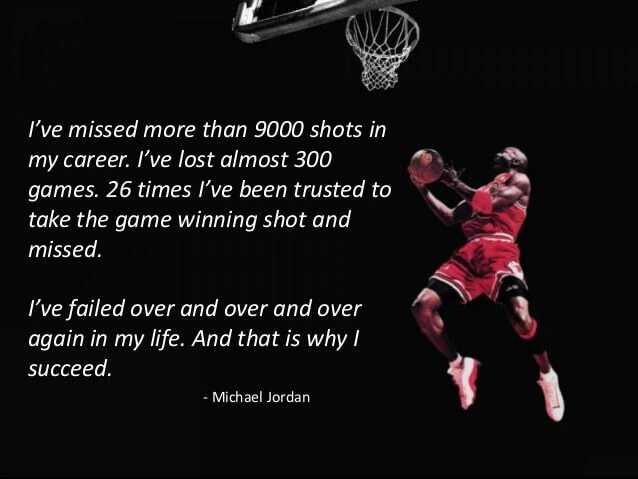
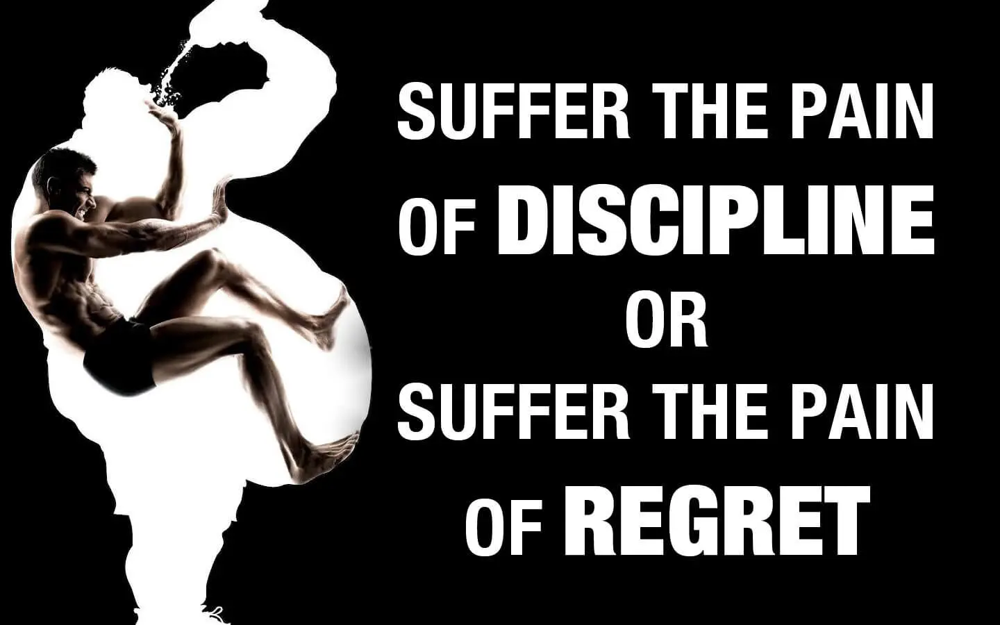
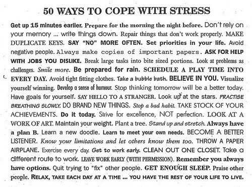

"None of us will accomplish anything excellent or commanding except when he listens to this whisper which is heard by him alone." - Ralph Waldo Emerson
When we look at things in the world we are not looking outward directly at them - we are looking inward into our minds; the brain blindly receives sensory data and from this paints a picture of what reality must be, and it is this painting that we gaze at. A painting is not always perfectly representative of reality as our beliefs, expectations, moods, attitudes, relative positions, and sometimes mental illnesses skew our perceptions and experiences of reality. Some of these things we have control over, and in controlling our perceptions we control our reality.
"If you are ever distressed by anything external, the pain is not due to the thing itself, but to your estimate of it; and this you have the power to revoke at any moment." - Marcus Aurelius
"If you change the way you look at things, then the things you look at change." - Wayne Dyer
If life is an RPG (the wojak you see throughout this video is the opposite of what you want to be btw), you're using all your gold on crude armor. Use your hours to level up in different aspects of life, whether that be social experiences, education, athletic prowess, political knowledge, or personal skill crafts. Otherwise you will eventually die without having truly lived. The truth is, most of us will live to 70-80 (and that is being a little optimistic); which gives us roughly 20,000 days (assuming you're around 18-24) give or take. And only about 5000 days before we turn 35 (the peak of our youth/career). If you've spent the last 30 days doing absolutely nothing to increase your stock as a person, then why the fuck are you even alive? That is 30/5000 days you will never see again.
Our lives are made up of a collection of these single days before we ultimately die. Reflect on how you're spending these days, and ask yourself if anything beneficial is coming out of it. We were all raised to believe that we can accomplish anything if we put our minds to it. But much less we believe it, the people preaching this don't even believe it. Here's the interesting secret: this REALLY is possible. Barring some extreme genetic deficiencies, we truly can achieve anything we put our minds to. But it is not enough to just say you want to be successful, you have to be specific and above all, YOU have to believe it. The only thing that separates the mediocre people from the ones that do end up where they want in life is the subscription to this idea, and the discipline to get up and do it.
Hard work trumps talent nine times out of ten. If Kobe Bryant or Michael Jordan didn't have that ridiculous, obsessive work ethic, we might've never witnessed the best basketball had to offer. They were the ones willing to efficiently put their hours into good use. As Malcolm Gladwell proposed, the key to success in any field is, to a large extent, a matter of practicing a specific task for roughly 10,000 hours. It's easy to say why you can't do this or that. It's easy to verbally express your shortcomings. It's easy to make excuses. All of these cushion your ego. What is not easy is telling yourself that this is what you have to do to become successful, and actually attacking it.
"Aim for the top. There is plenty of room there. There are so few at the top it is almost lonely there." - Samuel Insull
There are two types of people in this world, those that sit around waiting for opportunities to come to them, and those that go out and look for it. There really is no such thing as good luck. It is a matter of putting yourself in these opportunities, and working hard to open more doors. As the saying goes, "the harder I work, the luckier I get." Life allots you with 24 hours in a day. What you decide to do with it is up to you. Don't let fear of failure stop you from pursuing great things. Fear is the most empowering tool one is bestowed with. It is the ultimate reference point of life. It is life's way of telling you that this is the direction you need to go. What if you knew you couldn't fail at anything? What would you do today? Would you still sit around waiting for a guarantee?
You want to be an actor? You want that 10/10? You want to live in luxurious homes? You want to travel the world? Stop wishing and start doing. You better start believing you can and start taking the necessary steps into achieving your dream. No matter how "unrealistic" the goal, the person that obsessively believes he can achieve it, will have a 100% greater chance of achieving it than the person that doesn't.
"Whether you think you can or whether you think you can't, you're right." - Henry Ford
As a wise man once said, "The only thing you are guaranteed at birth is death. You have a right to that. The rest is earned. You are entitled to nothing." Life gives everyone a certain amount of hours. In due course, what you wish to do with your allotted time will reap you dividends or nothing.
Time is truly the currency of life. Nothing is insurmountable as long as you're willing to put in the hard work. And all hard work is, is not mindlessly letting your days escape. Make sure you're progressing towards your goals daily and are acting productively. That is key. All the time you spend just wasting life is what hard work is not. Have you ever been overwhelmed by a stream of euphoric motivation, where you've accomplished so much or learned so much that you just feel powerful... and even enlightened? Now most people do that once every two weeks. Imagine being productive EVERY SINGLE DAY... Do that and I dare you to tell me you can't accomplish anything you desire.
I'm 21. I'm not going to sit here and act like I know it all, or have achieved success by any means. What I do know is, I've recently made a commitment to obsessively work for my goals. It is really sad how I've let the past two decades of my life just go by. At the same time, it is really comforting that the average person does not realize this, perhaps they never will. But I will never again live mindlessly.
Start accepting responsibility and take control of your life.
How many of you, as soon as you wake up, immediately turn on the computer or television or radio and flood your system with information and noise? Does the noise ever stop at all throughout the day until you fall asleep?
You need to find a time in your schedule to just stop - quiet all external noise, quiet all internal noise (worries, thoughts) - and just sit and bask in the silence. Do this every day and eventually use this time to actively meditate.
There are many forms of meditation. A good starting routine is to sit in silence in a comfortable position and concentrate on one particular thing for a prolonged period of time. Do not let your thoughts wander. Keep them trained and focused on one thing. It is very difficult but with practice you will get better. Some like to focus on their breathing, or chanting. Personally I like to light some candles and focus on the flicker of the flame.
Getting ready to meditate
Start by sitting in a comfortable pose. If your back is strong, you can do these anywhere. Most people find they get back pains quickly, so you can also do these up against a wall or using cushions for support. I would recommend any of the following as long as they are relatively easy for you to do. Meditating can be difficult enough, no need to complicate it by trying to contort yourself into full lotus pose. Here are some good ones to try:
As far as where your hands are placed, don't worry too much about it. Different hand positions can be used for different purposes, but in the beginning do whatever feels right to you. Adopt a stable posture where you aren't hunched over, but aren't totally rigid either. The main thing is finding a comfortable, stable position where you feel grounded. You can move around throughout the meditation to be more comfortable if you want. The purpose is not to be in conflict with your body. Relax your shoulders and close your eyes, or lower them to where they are barely open.
Beginning meditation
Once you have found your comfortable position, begin by establishing a stable breath. Your breath will be your anchor and is, quite literally, your lifeline. Simply focus on your breath and the way it feels to you. As you breathe, notice the sensations of your body. Recognize any areas of obvious discomfort. Try to allow your breathing to relax the tension in these areas, but don't force anything. Sometimes your body just needs to open up on its own terms.
Once you have addressed the obvious feelings within your body, bring yourself back to your breath. Simply focus on the steady, rhythmic feeling, almost as if your breathing is like waves in the ocean. Always present, always flowing. Open and soften your mind while you do this. Notice what thoughts and feelings arise. Don't judge or analyze these feelings; simply observe them. I like to pretend that my mind is a stream of consciousness in the truest sense. I watch my thoughts pass by as though they are a stream and I am sitting on the bank as a casual observer. Remember, keep your mind soft and open to whatever may come, but try not to actively think about anything.
If you guys are like me, this can be incredibly difficult, as my mind seems to be going 24/7. However, when you notice yourself paying too much attention to a given thought, simply let it go and return to your breath. Focusing on your breathing is the best way to ground yourself and feel your life force within you. Become aware of the way your breath feels. The cool, tingling sensation as it hits the back of your throat. The rise and fall of your chest or belly. The warmth and relaxation it spreads throughout your being. Spending time just focusing on your breath grounds your mind, body, and spirit in the present moment. Allow yourself to relax into the moment. It's common for your thoughts to creep back in frequently. Simply acknowledge them. Don't judge or evaluate them. Be gentle with yourself and let them pass like a peaceful stream while you return to your breath.
If you can, try to do this exercise every day. I think you guys will find that even doing this basic meditation for only 10 minutes a day will have a huge impact. If you have trouble sleeping at night, this might be a good one to do right before bed. I have a bunch of other meditation exercises I want to share, but this I've found this to be the most basic and most helpful.
I don't have much to say here since we all relax in our different ways but I thought it was important to include this section since it is, well, important. Reserve a small amount of time each day for some relaxation or else you will burn yourself out.
Happiness is not a state to arrive at, but a manner of traveling. - Margaret Lee Runbeck
